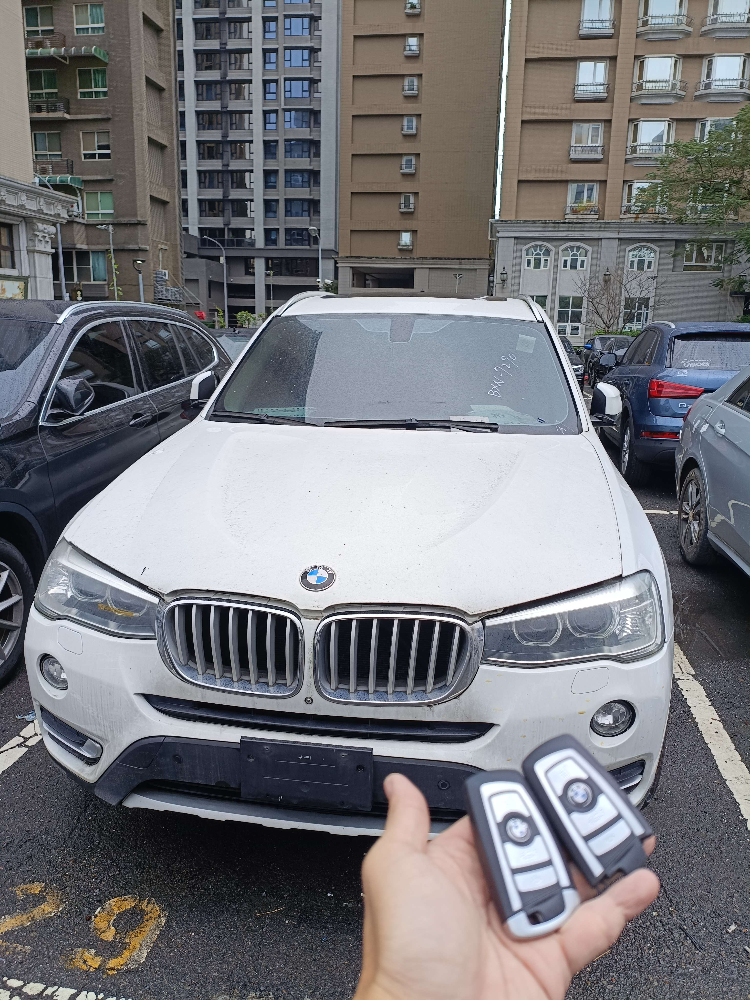

現場實拍：林口大型拍賣場得標 BMW X3 智慧鑰匙全丟現場匹配
林口大型車輛拍賣中心：得標車主的第一道防線
近日接獲一位在林口地區大型中古車競拍場得標的車主委託。該輛 2016 年式 BMW X3 (F25) 於進場時已無原始鑰匙。面對拍賣場地狹窄、大型拖吊車進出不易的困擾，車主選擇極致核心的現場解碼服務。
技術核心：FEM/BDC 系統現場數據重構
針對 BMW F 系列高階防盜架構，技師在拍場現場執行以下專業流程：
- • 拍場現地作業： 職人行動解碼站直接進駐競拍場，免除二次拖吊成本。
- • 數據採集匹配： 透過 OBD 讀取系統防盜數據，現場完成兩把全新智慧鑰匙寫入。
- • 全功能測試： 包含門鎖連動、一鍵啟動及系統診斷確認，確保交車狀態完美。
拍場車輛往往面臨電力不足或長時間停放的問題。極致核心在救援過程中全程接續穩壓電源，確保解碼過程系統電壓穩定，為得標車主省下漫長的等待期，當場即可將愛車開離。